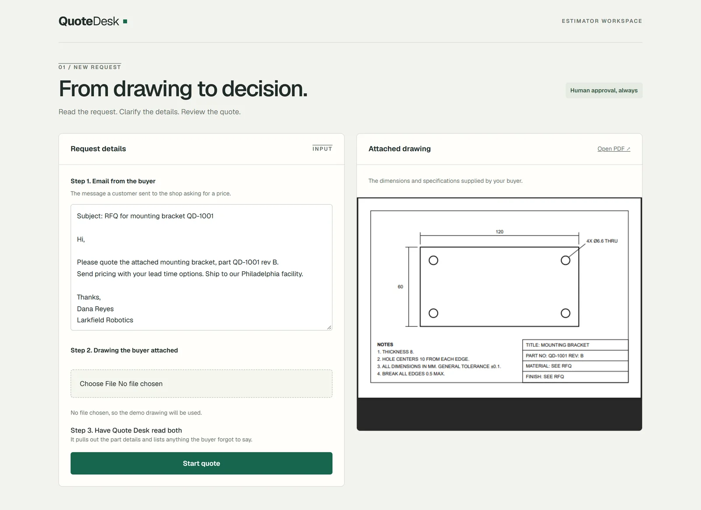

Software
QuoteDesk: a quoting assistant for machine shops
QuoteDesk is a team MVP from the Google DeepMind New Agentic Economy Hackathon.

It takes a machine shop from an incomplete quote request to three priced options: Gemini reads the buyer's email and PDF drawing, a Gemini Live voice agent asks for what is missing, and code sets the prices. I built the intake side: extraction with quoted evidence, the missing-field check and the routes that create, read and reset a quote.
The problem
QuoteDesk cannot price a part without its material, quantity and finish, and it is built for requests that leave them out. The demo email is a request for quote (RFQ) on bracket QD-1001 rev B. The drawing's title block says MATERIAL: SEE RFQ and FINISH: SEE RFQ, and neither document states a quantity.
A language model asked to fill those blanks can return a plausible guess. So on the intake side, a value counts only when the model quotes its source text.
What I built
The intake route sends the email and the PDF to gemini-3.8-flash with a JSON schema for 10 fields: part number, revision, three dimensions, hole count, tolerance, material, quantity and finish. Each field comes back with a value, the exact text behind it and its source, either the drawing or the email.
A Zod schema checks the reply's shape, then plain TypeScript sets each field's status. A field counts as extracted only with a value, a source and non-empty evidence. Placeholders such as SEE RFQ and TBD count as missing, and so does a material the shop does not offer.
A loop over a fixed field order lists the missing fields, so the model never decides what is missing. A missing drawing fact such as thickness returns an HTTP 422 error, since the voice call may only ask about material, quantity and finish.
If the model call fails, the panel offers a saved result for the demo drawing, logged as saved. I also wrote the read and reset routes, made the demo drawing and wired up the Supabase server client.
Results
The app is deployed and its intake page loads. All 25 commits on master, 12 of them mine, fall between 10:52 and 15:57 on Oct 10, 2026.
The expected result for the demo request is 7 fields from the drawing and 3 left for the buyer. A script runs the live extraction and compares all 10 values with that result. No run of the script was committed, so I quote no accuracy figure.
The team's test script asserts the bracket's price: 50 pieces in 6061 aluminum with clear anodize cost $716.50 on the standard option, at 13 business days.
Limits and next steps
There is no latency benchmark, load-test result or measured cost per request. Prices use invented rates, the read and reset routes have no estimator login, and uploaded PDFs are not stored.
My only test case is one clean drawing I made for the demo, and the prompt assumes millimeters. The code checks that evidence is present, but not that the quoted text appears in the PDF.
Before real use the app would need logins, stored drawings, transactional saves and shop-specific pricing.
What the team built
The rest of the team built the voice flow and the steps after it. A QR code opens a Gemini Live session in the buyer's browser, where the agent records answers through three tools. Server code validates each answer, and pricing code returns three delivery options for the estimator to approve.